Single Qubit Gates
Latest python notebook is available here

# Useful additional packages import matplotlib.pyplot as plt %matplotlib inline import numpy as np from math import pi
from qiskit import QuantumCircuit, ClassicalRegister, QuantumRegister, execute from qiskit.tools.visualization import circuit_drawer from qiskit.quantum_info import state_fidelity from qiskit import BasicAer backend = BasicAer.get_backend('unitary_simulator')
U - gates
1. Single qubit circuit:
Base states : |0>, |1>
q = QuantumRegister(1) qc = QuantumCircuit(q) qc.u3(pi/2,pi/2,pi/2,q) qc.draw(output='mpl')
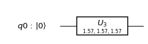
job = execute(qc, backend) job.result().get_unitary(qc, decimals=3)
array([[ 0.707+0.j , 0. -0.707j],
[ 0. +0.707j, -0.707+0.j ]])
1.1. Gates in series
q = QuantumRegister(1) qc = QuantumCircuit(q) qc.u3(pi/2,pi/2,pi/2,q) qc.u3(pi/2,pi/2,pi/2,q) qc.draw(output='mpl')
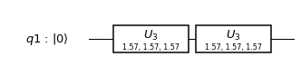
job = execute(qc, backend) job.result().get_unitary(qc, decimals=3)
array([[1.+0.j, 0.+0.j],
[0.+0.j, 1.+0.j]])
2. Double qubit circuit
Base states: |00>, |01>, |10>,|11>
2.1. $$I \otimes U$$
q = QuantumRegister(2) qc = QuantumCircuit(q) qc.u3(pi/2,pi/2,pi/2,q[0]) qc.draw(output='mpl')
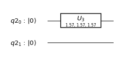
job = execute(qc, backend) job.result().get_unitary(qc, decimals=3)
array([[ 0.707+0.j , 0. -0.707j, 0. +0.j , 0. +0.j ],
[ 0. +0.707j, -0.707+0.j , 0. +0.j , 0. +0.j ],
[ 0. +0.j , 0. +0.j , 0.707+0.j , 0. -0.707j],
[ 0. +0.j , 0. +0.j , 0. +0.707j, -0.707+0.j ]])
2.2. $$U \otimes I$$
q = QuantumRegister(2) qc = QuantumCircuit(q) qc.u3(pi/2,pi/2,pi/2,q[1]) qc.draw(output='mpl')

job = execute(qc, backend) job.result().get_unitary(qc, decimals=3)
array([[ 0.707+0.j , 0. +0.j , 0. -0.707j, 0. +0.j ],
[ 0. +0.j , 0.707+0.j , 0. +0.j , 0. -0.707j],
[ 0. +0.707j, 0. +0.j , -0.707+0.j , 0. +0.j ],
[ 0. +0.j , 0. +0.707j, 0. +0.j , -0.707+0.j ]])
2.3 $$U \otimes U$$
q = QuantumRegister(2) qc = QuantumCircuit(q) qc.u3(pi/2,pi/2,pi/2,q[0]) qc.u3(pi/2,pi/2,pi/2,q[1]) qc.draw(output='mpl')
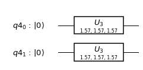
job = execute(qc, backend) job.result().get_unitary(qc, decimals=3)
array([[ 0.5+0.j , 0. -0.5j, 0. -0.5j, -0.5+0.j ],
[ 0. +0.5j, -0.5+0.j , 0.5+0.j , 0. +0.5j],
[ 0. +0.5j, 0.5+0.j , -0.5+0.j , 0. +0.5j],
[-0.5+0.j , 0. -0.5j, 0. -0.5j, 0.5+0.j ]])
2.4. $$(U \times U) \otimes (U\times U)$$
q = QuantumRegister(2) qc = QuantumCircuit(q) qc.u3(pi/2,pi/2,pi/2,q[0]) qc.u3(pi/2,pi/2,pi/2,q[0]) qc.u3(pi/2,pi/2,pi/2,q[1]) qc.u3(pi/2,pi/2,pi/2,q[1]) qc.draw(output='mpl')
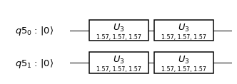
job = execute(qc, backend) job.result().get_unitary(qc, decimals=3)
array([[1.+0.j, 0.+0.j, 0.+0.j, 0.+0.j],
[0.+0.j, 1.+0.j, 0.+0.j, 0.+0.j],
[0.+0.j, 0.+0.j, 1.+0.j, 0.+0.j],
[0.+0.j, 0.+0.j, 0.+0.j, 1.+0.j]])
3. Three qubit circuit
Base states: |000>,|001>,|010>,|011>,|100>,|110>,|101>,|111>
3.1. $$I \otimes I \otimes U$$
q = QuantumRegister(3) qc = QuantumCircuit(q) qc.u3(pi/2,pi/2,pi/2,q[0]) qc.draw(output='mpl')
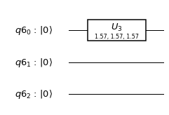
job = execute(qc, backend) job.result().get_unitary(qc, decimals=3)
array([[ 0.707+0.j , 0. -0.707j, 0. +0.j , 0. +0.j ,
0. +0.j , 0. +0.j , 0. +0.j , 0. +0.j ],
[ 0. +0.707j, -0.707+0.j , 0. +0.j , 0. +0.j ,
0. +0.j , 0. +0.j , 0. +0.j , 0. +0.j ],
[ 0. +0.j , 0. +0.j , 0.707+0.j , 0. -0.707j,
0. +0.j , 0. +0.j , 0. +0.j , 0. +0.j ],
[ 0. +0.j , 0. +0.j , 0. +0.707j, -0.707+0.j ,
0. +0.j , 0. +0.j , 0. +0.j , 0. +0.j ],
[ 0. +0.j , 0. +0.j , 0. +0.j , 0. +0.j ,
0.707+0.j , 0. -0.707j, 0. +0.j , 0. +0.j ],
[ 0. +0.j , 0. +0.j , 0. +0.j , 0. +0.j ,
0. +0.707j, -0.707+0.j , 0. +0.j , 0. +0.j ],
[ 0. +0.j , 0. +0.j , 0. +0.j , 0. +0.j ,
0. +0.j , 0. +0.j , 0.707+0.j , 0. -0.707j],
[ 0. +0.j , 0. +0.j , 0. +0.j , 0. +0.j ,
0. +0.j , 0. +0.j , 0. +0.707j, -0.707+0.j ]])
3.2. $$I \otimes U \otimes I$$
q = QuantumRegister(3) qc = QuantumCircuit(q) qc.u3(pi/2,pi/2,pi/2,q[1]) qc.draw(output='mpl')
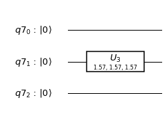
job = execute(qc, backend) job.result().get_unitary(qc, decimals=3)
array([[ 0.707+0.j , 0. +0.j , 0. -0.707j, 0. +0.j ,
0. +0.j , 0. +0.j , 0. +0.j , 0. +0.j ],
[ 0. +0.j , 0.707+0.j , 0. +0.j , 0. -0.707j,
0. +0.j , 0. +0.j , 0. +0.j , 0. +0.j ],
[ 0. +0.707j, 0. +0.j , -0.707+0.j , 0. +0.j ,
0. +0.j , 0. +0.j , 0. +0.j , 0. +0.j ],
[ 0. +0.j , 0. +0.707j, 0. +0.j , -0.707+0.j ,
0. +0.j , 0. +0.j , 0. +0.j , 0. +0.j ],
[ 0. +0.j , 0. +0.j , 0. +0.j , 0. +0.j ,
0.707+0.j , 0. +0.j , 0. -0.707j, 0. +0.j ],
[ 0. +0.j , 0. +0.j , 0. +0.j , 0. +0.j ,
0. +0.j , 0.707+0.j , 0. +0.j , 0. -0.707j],
[ 0. +0.j , 0. +0.j , 0. +0.j , 0. +0.j ,
0. +0.707j, 0. +0.j , -0.707+0.j , 0. +0.j ],
[ 0. +0.j , 0. +0.j , 0. +0.j , 0. +0.j ,
0. +0.j , 0. +0.707j, 0. +0.j , -0.707+0.j ]])
3.3. $$U \otimes I \otimes I$$
q = QuantumRegister(3) qc = QuantumCircuit(q) qc.u3(pi/2,pi/2,pi/2,q[2]) qc.draw(output='mpl')
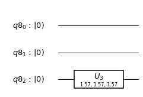
job = execute(qc, backend) job.result().get_unitary(qc, decimals=3)
array([[ 0.707+0.j , 0. +0.j , 0. +0.j , 0. +0.j ,
0. -0.707j, 0. +0.j , 0. +0.j , 0. +0.j ],
[ 0. +0.j , 0.707+0.j , 0. +0.j , 0. +0.j ,
0. +0.j , 0. -0.707j, 0. +0.j , 0. +0.j ],
[ 0. +0.j , 0. +0.j , 0.707+0.j , 0. +0.j ,
0. +0.j , 0. +0.j , 0. -0.707j, 0. +0.j ],
[ 0. +0.j , 0. +0.j , 0. +0.j , 0.707+0.j ,
0. +0.j , 0. +0.j , 0. +0.j , 0. -0.707j],
[ 0. +0.707j, 0. +0.j , 0. +0.j , 0. +0.j ,
-0.707+0.j , 0. +0.j , 0. +0.j , 0. +0.j ],
[ 0. +0.j , 0. +0.707j, 0. +0.j , 0. +0.j ,
0. +0.j , -0.707+0.j , 0. +0.j , 0. +0.j ],
[ 0. +0.j , 0. +0.j , 0. +0.707j, 0. +0.j ,
0. +0.j , 0. +0.j , -0.707+0.j , 0. +0.j ],
[ 0. +0.j , 0. +0.j , 0. +0.j , 0. +0.707j,
0. +0.j , 0. +0.j , 0. +0.j , -0.707+0.j ]])
3.4. $$I \otimes U \otimes U$$
q = QuantumRegister(3) qc = QuantumCircuit(q) qc.u3(pi/2,pi/2,pi/2,q[0]) qc.u3(pi/2,pi/2,pi/2,q[1]) qc.draw(output='mpl')
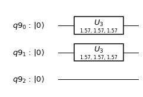
job = execute(qc, backend) job.result().get_unitary(qc, decimals=3)
array([[ 0.5+0.j , 0. -0.5j, 0. -0.5j, -0.5+0.j , 0. +0.j , 0. +0.j ,
0. +0.j , 0. +0.j ],
[ 0. +0.5j, -0.5+0.j , 0.5+0.j , 0. +0.5j, 0. +0.j , 0. +0.j ,
0. +0.j , 0. +0.j ],
[ 0. +0.5j, 0.5+0.j , -0.5+0.j , 0. +0.5j, 0. +0.j , 0. +0.j ,
0. +0.j , 0. +0.j ],
[-0.5+0.j , 0. -0.5j, 0. -0.5j, 0.5+0.j , 0. +0.j , 0. +0.j ,
0. +0.j , 0. +0.j ],
[ 0. +0.j , 0. +0.j , 0. +0.j , 0. +0.j , 0.5+0.j , 0. -0.5j,
0. -0.5j, -0.5+0.j ],
[ 0. +0.j , 0. +0.j , 0. +0.j , 0. +0.j , 0. +0.5j, -0.5+0.j ,
0.5+0.j , 0. +0.5j],
[ 0. +0.j , 0. +0.j , 0. +0.j , 0. +0.j , 0. +0.5j, 0.5+0.j ,
-0.5+0.j , 0. +0.5j],
[ 0. +0.j , 0. +0.j , 0. +0.j , 0. +0.j , -0.5+0.j , 0. -0.5j,
0. -0.5j, 0.5+0.j ]])
3.4. $$U \otimes U \otimes U$$
q = QuantumRegister(3) qc = QuantumCircuit(q) qc.u3(pi/2,pi/2,pi/2,q[0]) qc.u3(pi/2,pi/2,pi/2,q[1]) qc.u3(pi/2,pi/2,pi/2,q[2]) qc.draw(output='mpl')
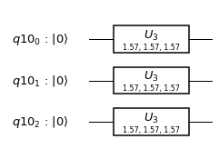
job = execute(qc, backend) job.result().get_unitary(qc, decimals=3)
array([[ 0.354+0.j , 0. -0.354j, 0. -0.354j, -0.354+0.j ,
0. -0.354j, -0.354+0.j , -0.354+0.j , 0. +0.354j],
[ 0. +0.354j, -0.354+0.j , 0.354+0.j , 0. +0.354j,
0.354+0.j , 0. +0.354j, 0. -0.354j, 0.354+0.j ],
[ 0. +0.354j, 0.354+0.j , -0.354+0.j , 0. +0.354j,
0.354+0.j , 0. -0.354j, 0. +0.354j, 0.354+0.j ],
[-0.354+0.j , 0. -0.354j, 0. -0.354j, 0.354+0.j ,
0. +0.354j, -0.354+0.j , -0.354+0.j , 0. -0.354j],
[ 0. +0.354j, 0.354+0.j , 0.354+0.j , 0. -0.354j,
-0.354+0.j , 0. +0.354j, 0. +0.354j, 0.354+0.j ],
[-0.354+0.j , 0. -0.354j, 0. +0.354j, -0.354+0.j ,
0. -0.354j, 0.354+0.j , -0.354+0.j , 0. -0.354j],
[-0.354+0.j , 0. +0.354j, 0. -0.354j, -0.354+0.j ,
0. -0.354j, -0.354+0.j , 0.354+0.j , 0. -0.354j],
[ 0. -0.354j, 0.354+0.j , 0.354+0.j , 0. +0.354j,
0.354+0.j , 0. +0.354j, 0. +0.354j, -0.354+0.j ]])
3.5. $$(U \times U) \otimes (U \times U) \otimes (U \times U)$$
q = QuantumRegister(3) qc = QuantumCircuit(q) qc.u3(pi/2,pi/2,pi/2,q[0]) qc.u3(pi/2,pi/2,pi/2,q[0]) qc.u3(pi/4,pi/4,pi/4,q[1]) qc.u3(3*pi/4,3*pi/4,3*pi/4,q[1]) qc.u3(pi/6,pi/6,pi/6,q[2]) qc.u3(5*pi/6,5*pi/6,5*pi/6,q[2]) qc.draw(output='mpl')
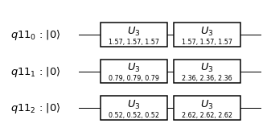
job = execute(qc, backend) job.result().get_unitary(qc, decimals=3)
array([[ 0.354+0.j , 0. +0.j , 0.25 +0.25j , 0. +0.j ,
0.53 +0.306j, 0. +0.j , 0.158+0.592j, 0. +0.j ],
[ 0. +0.j , 0.354+0.j , 0. +0.j , 0.25 +0.25j ,
0. +0.j , 0.53 +0.306j, 0. +0.j , 0.158+0.592j],
[-0.25 +0.25j , 0. +0.j , 0.354+0.j , 0. +0.j ,
-0.592+0.158j, 0. +0.j , 0.53 +0.306j, 0. +0.j ],
[ 0. +0.j , -0.25 +0.25j , 0. +0.j , 0.354+0.j ,
0. +0.j , -0.592+0.158j, 0. +0.j , 0.53 +0.306j],
[-0.53 +0.306j, 0. +0.j , -0.592-0.158j, 0. +0.j ,
0.354+0.j , 0. +0.j , 0.25 +0.25j , 0. +0.j ],
[ 0. +0.j , -0.53 +0.306j, 0. +0.j , -0.592-0.158j,
0. +0.j , 0.354+0.j , 0. +0.j , 0.25 +0.25j ],
[ 0.158-0.592j, 0. +0.j , -0.53 +0.306j, 0. +0.j ,
-0.25 +0.25j , 0. +0.j , 0.354+0.j , 0. +0.j ],
[ 0. +0.j , 0.158-0.592j, 0. +0.j , -0.53 +0.306j,
0. +0.j , -0.25 +0.25j , 0. +0.j , 0.354+0.j ]])